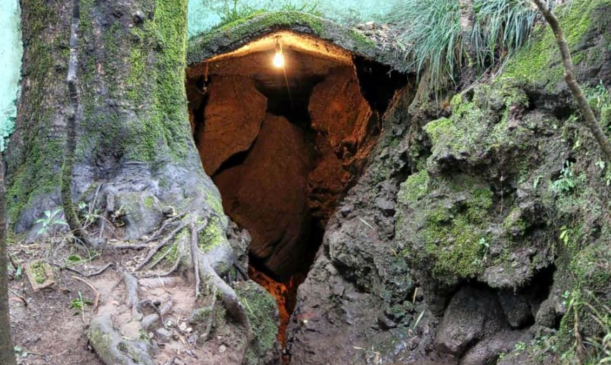
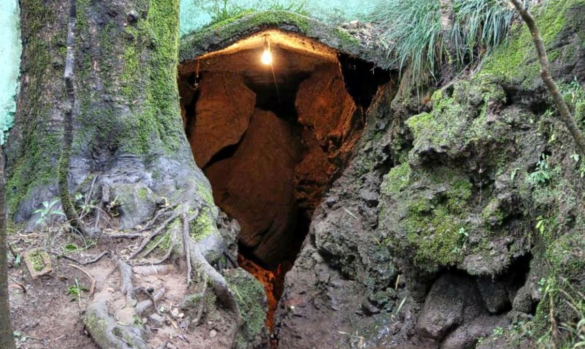

The majestic mountains and the sparkling waters of the lake add an immense lot to the beauty of the town. Commonly known as the “Lake District of India”, Nainital is one of the most beautiful hill stations in North India. Surrounded by mountains on three sides Nainital is located around the beautiful lake Naini Tal.One of the most popular hill destinations in India, Nainital's charms include everything from boating and sailing to old temples and heritage buildings, and of course, scenic views at every other step. The Lake City Nainital,situated in the lap of Uttarakhand is one of the favorites for honeymooners and couples
| Nainital Lake |
Nainital Ropeway |
Eco Cave Gardebs  |
Snow View Point |
| Weather | Next |